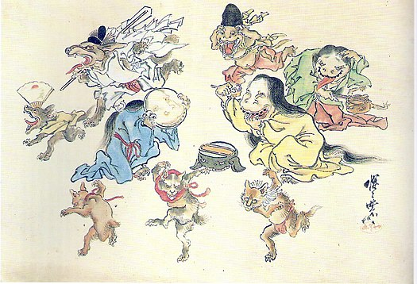

百鬼夜行

事件地點
日本
描述
日本的平安時代，是一個幽暗未明，存在著人類和妖怪兩者的時代，妖怪住的地方，和人類所住的地方，其實空間上是重疊的，只是人類在白天活動，妖怪們則是在晚間出現。這樣的感覺，可以在宮崎駿電影《千與千尋》、椎橋寬作品《妖怪少爺》中看到，白天杳無人跡的主題樂園，雖已成為荒墟，但一到了夜晚，華燈初上，妖怪們紛紛出現，飲食街，溫泉鄉，妖怪們出沒的夜晚，過著如同人類一般的夜生活，好不熱鬧。那個時代裡，在京都，到了夜晚來臨，整條路空無一人，這時候會出現許多奇形怪狀的妖怪，像是廟會的行列一般，帶著猙獰的面孔，走在大路上，人稱「百鬼夜行」，有的像是破掉的茶壺、鍋碗瓢盆成群結隊地在夜晚的街道遊行，據說親眼目睹的人會遭受詛咒無緣無故地喪命。